id="js_content" style="">
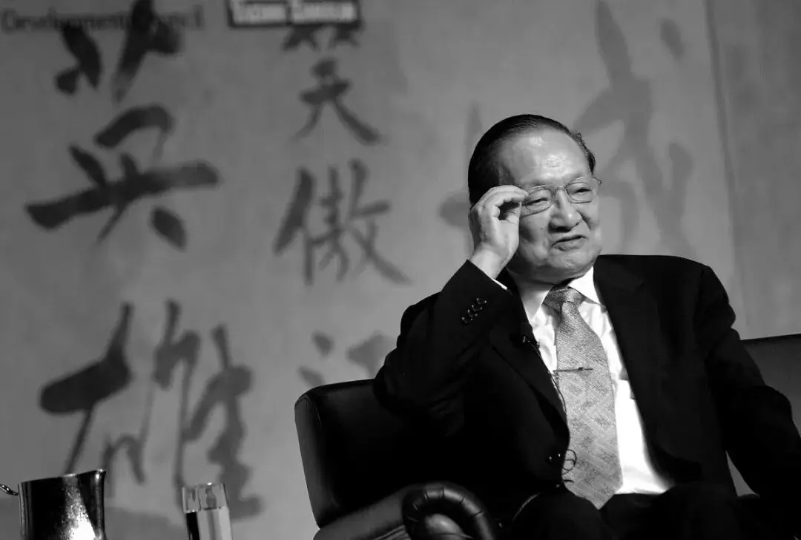
如果没有金庸，我的童年一定会一片灰暗。
我不会因为上学错过一两集《神雕侠侣》，就心心念念一直到大学后狂补。
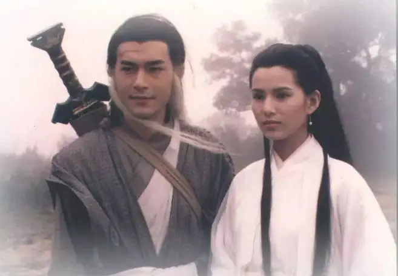
我不会硬生生看半个小时美容、减肥广告，就为了等下一集《射雕英雄传》。
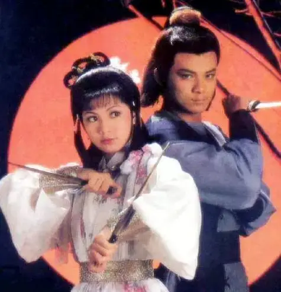
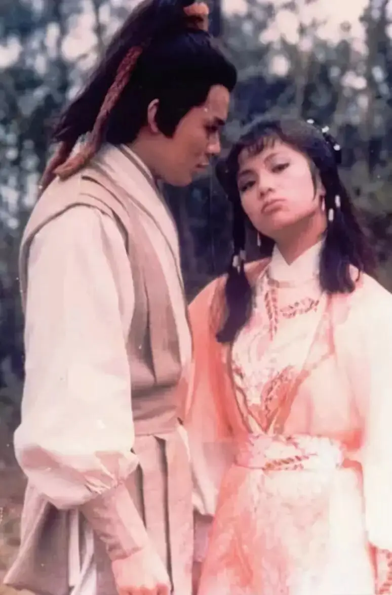
我不会每次看到有人粗制滥造您的作品就咬牙切齿，从内心里将那部剧和主演全部封杀。
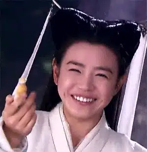
我不会冒着挨揍的风险和姑姑抢遥控器，就只为了看乔峰自带音响狂虐鸠摩智。
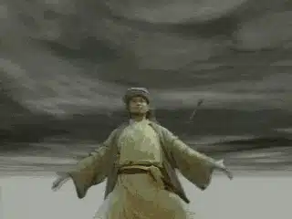
我不会无意中看到《笑傲江湖》的片段，就会有再刷一遍的冲动。
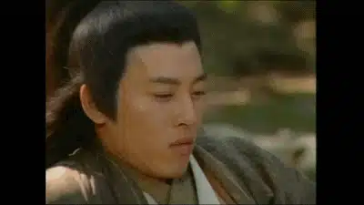
如果没有金庸。
我不会在火上烧铝合金条，就为了练一把倚天剑。
我不会每次攥紧拳头，就有一种真气运转，可以发功的错觉。
我不会无数次模仿黄日华的动作，幻想着一条龙从我头上盘旋而出。
我也不会用乾坤大挪移将同桌的板凳抽走，让她摔个底朝天。
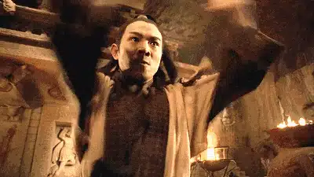
我也不会喊着各种绝世武功的名字和同学过招。
我也不会为自己可以在墙上连踢三脚就洋洋得意。
我也不会在家里插金刚砂来练铁砂掌。
我也不会像个傻子一样和同学玩点穴游戏。
我也不会想要有个大雕宠物。
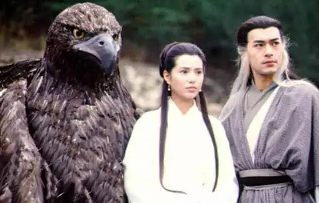
我也不会在无聊的课堂上无数次幻想自己坠入山崖，习得一生武艺后变成一个所有人都刮目相看的高冷剑客。
我更不会每次做课间操时，会想着自己报着一把古琴从教学楼上腾飞而下，随便弹一下，就可以让现场鸡飞狗跳。
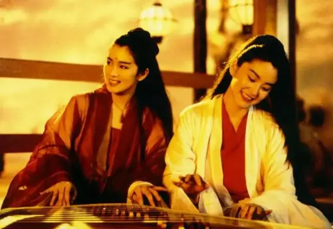
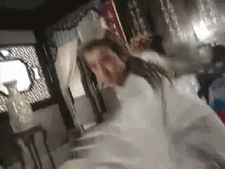
如果没有金庸。
我就不会知道古天乐，我就不会承认有的人真的很帅。
我也不会知道李若彤，我就不会有少年时的梦中情人。
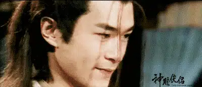
尹志平不会成为我心里永远的痛，梅超风不会成为我心里永远的阴影。
我不会想到岳不群就咬牙切齿，不会看到金龙法王的飞轮就害怕。
不会每次吐枣核就想到裘千尺的枣核钉，也不会捡到一根木棍就以为是打狗棒。
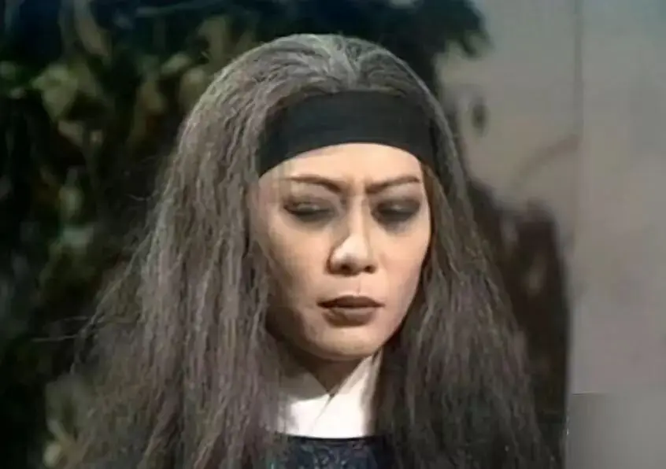
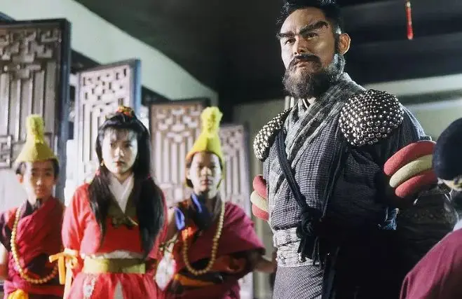
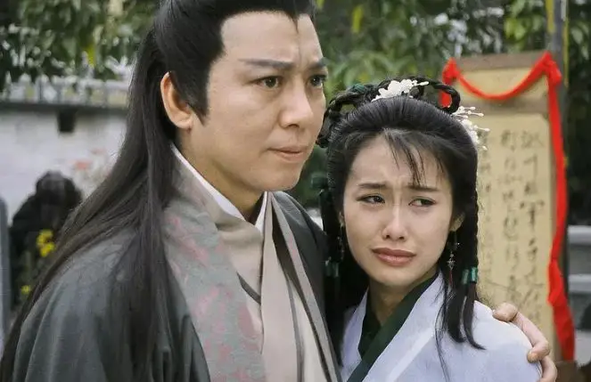
如果没有金庸。
我不会在网上看到带头大哥、玄冥二老、帮主这些绰号就满满的画面感。
我也不会给孩子起名字时，很本能地将金庸武侠里的名字想了个遍：
王语嫣、木婉清、钟灵、阮星竹、秦红棉、曲非烟、周芷若、李沅芷、何沅君、霍青桐、沐剑屏、水笙、何红药、程遥迦、苗若兰、岳灵珊、任盈盈、殷素素、夏青青、凌霜华、纪晓芙、洪凌波、李莫愁
风清扬、陈孤雁、梅念笙、姚清泉、闻苍松、石中玉、谢烟客、贝海石、潇湘子、余沧海、张淡月、石破天、阳顶天、文泰来、向问天、任我行、东方不败、陆天抒、陆乘风......
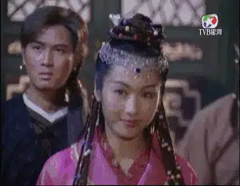
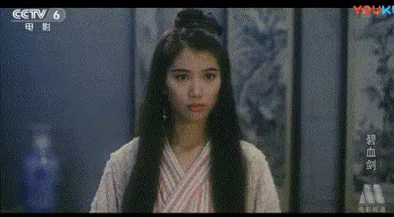
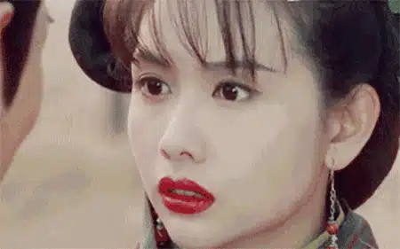
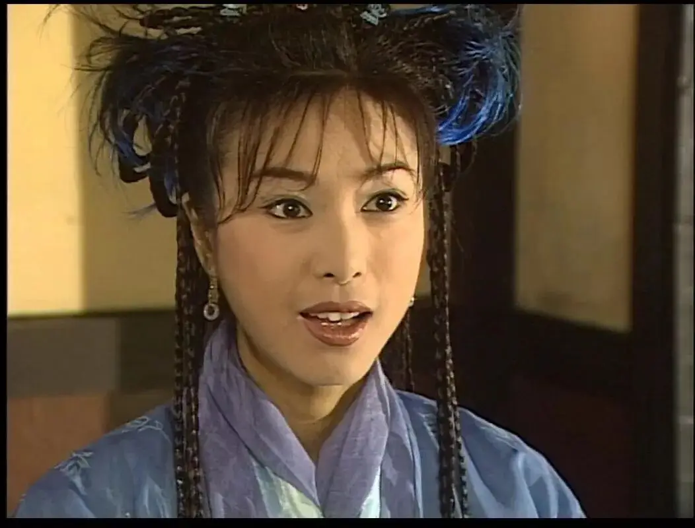
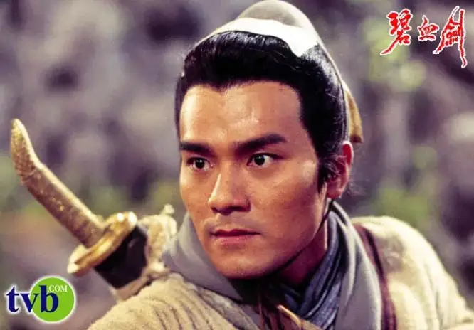
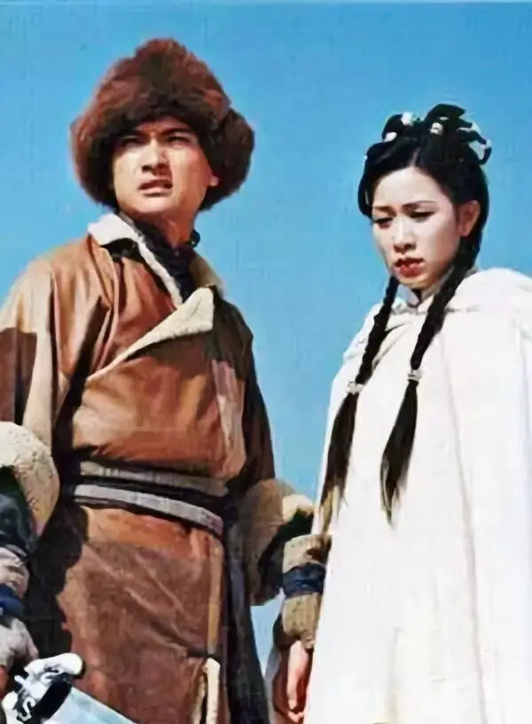
如果没有金庸，港片会黯然失色。
香港电影将失去最重要、最特色的创作源泉，TVB不会如此深入人心。
我也不会始终受不了大陆武侠片的艳丽，独独钟爱港片武侠的古黄色彩。
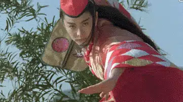
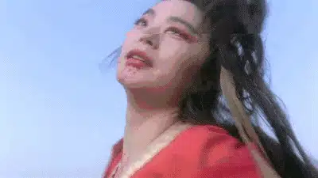
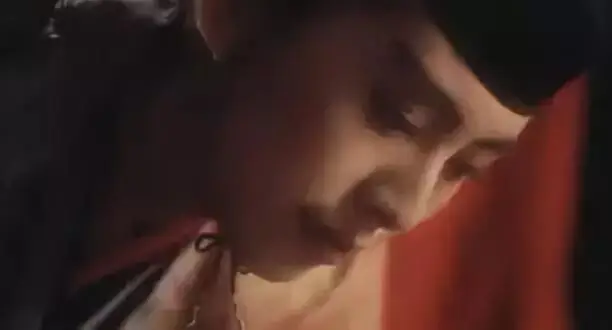
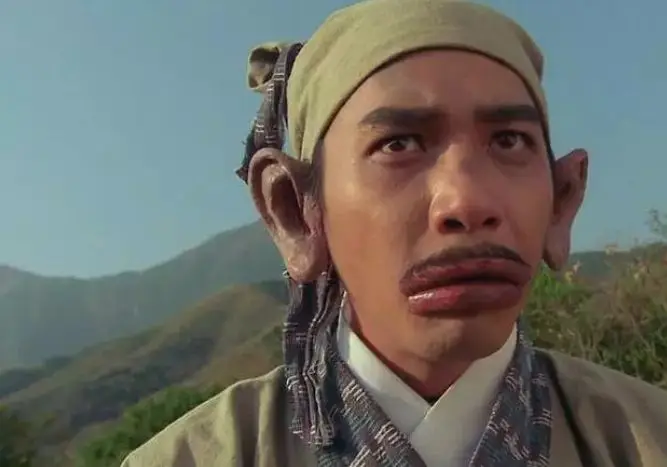
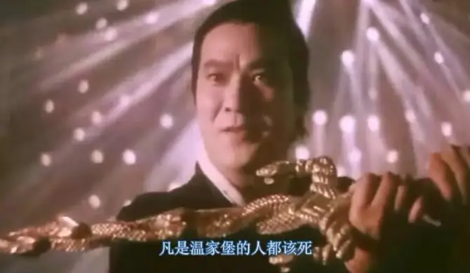
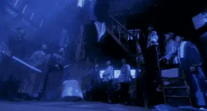
如果没有金庸。
我们就看不到跑龙套的周星驰和吴镇宇。
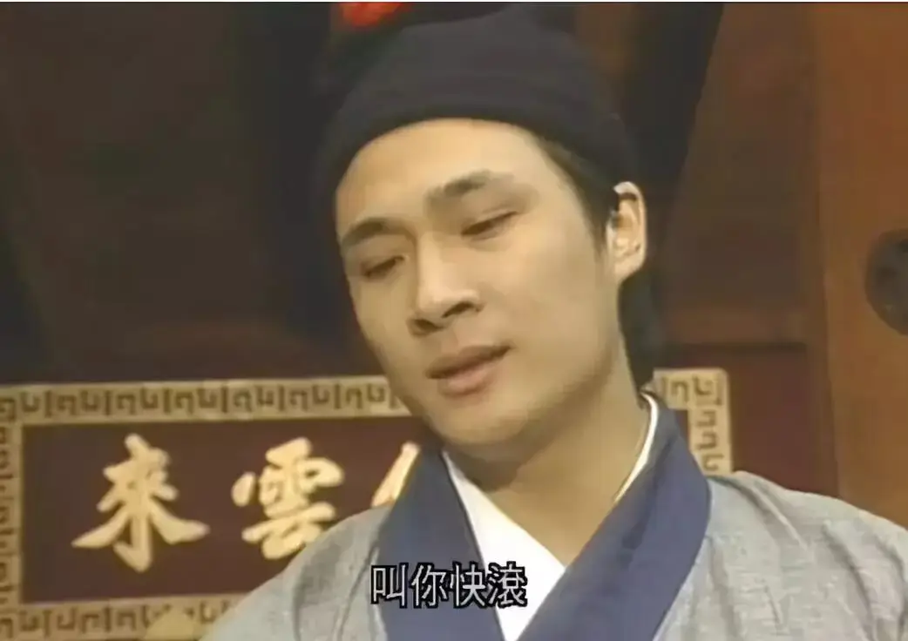
后来星爷的无厘头也不会那样丰富。
我们将看不到《醉拳苏乞儿》的终极大招降龙十八掌。
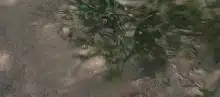
我们也无法体会《食神》中精妙的倚天切和屠龙斩。
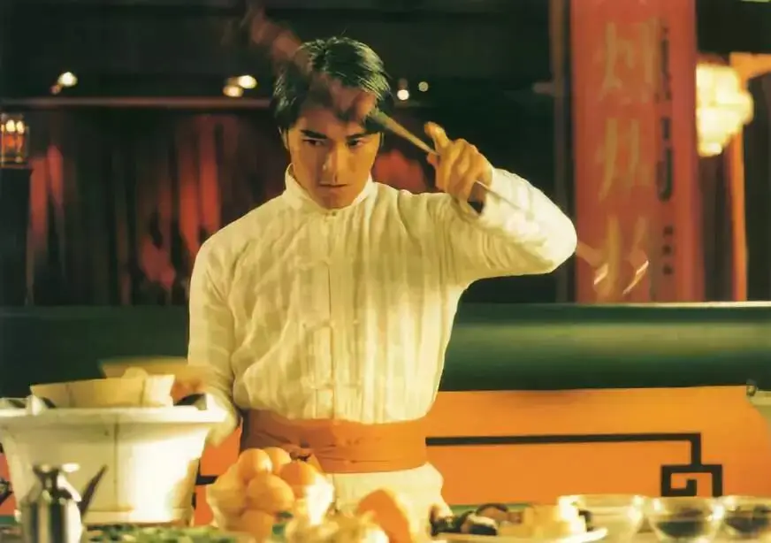
我们更不会看到《功夫》中仿佛从武侠世界穿越到现代的高人。
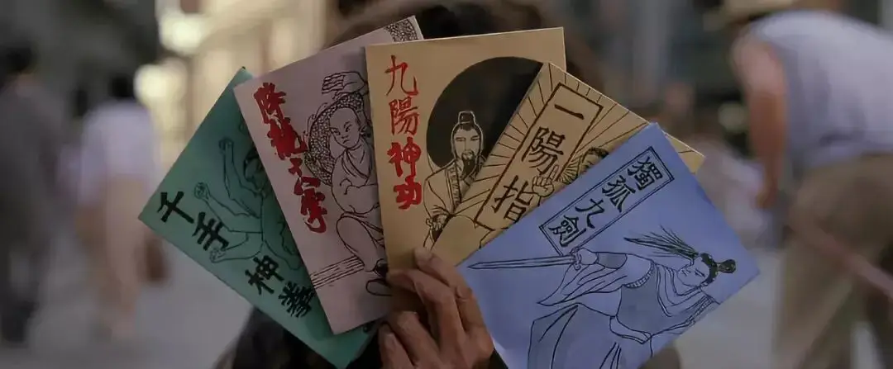
更难以一睹星爷版韦小宝的百般嘲弄和戏谑。
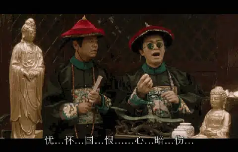
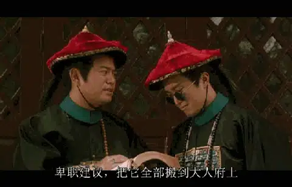
如果没有金庸，香港原创音乐可能会失去半壁江山。
没有曲洋和刘正风之间感人至深的友谊，胡伟立怎能谱得出荡气回肠的琴箫合奏曲《笑傲江湖》。
没有令狐冲的放荡不羁，黄霑怎能做的出笑看万事的《沧海一声笑》。
没有郭靖黄蓉的家国情义，顾嘉辉又怎能谱得出气势磅礴的《铁血丹心》，罗文，甄妮的声音又如何深入每个人的心中。
没有《天龙八部》树欲静而风不止的江湖，又怎么会有周华健大气磅礴的谱曲和嗓音以及林夕绝美的填词.....
我们也将不会那么快知道横山菁儿、喜多郎、宗次郎、神思者这些日本音乐大师。
如果没有金庸，我们不会对中国人有清醒的认识，不会对中国人绝望。
从修身齐家治天下儒家式的郭靖、乔峰，再到放荡不羁、归隐世外道家式的杨过、令狐冲、张无忌，最后封笔于八面玲珑、油嘴滑舌的真小人韦小宝。
金庸以为国人是义薄云天的乔峰，是可以超然世外的令狐冲。
到最后，金庸才发现国人只是一群没有骨头、没有原则、贪钱好色、偶尔来点小善良的韦小宝。
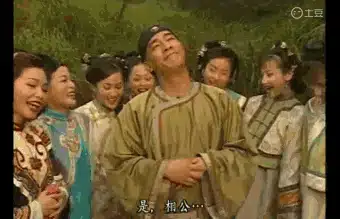
中原各大派不再是正义的坚守者，而是里一套外一套、虚伪残忍胜过魔教的吸血鬼。
道义不再是所有人最看重的珍珠，而是粪土一样的存在，甚至沦为左冷禅、岳不群谋取私利的工具。

这样的江湖，郭靖会被耍的团团转，乔峰活不过第三集，儒家已死，道家缥缈，像韦小宝一样活着就万岁万岁万万岁了。
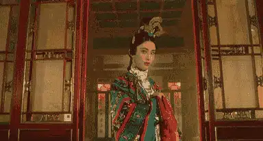
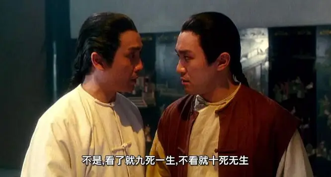
如今，江湖的缔造者也离我们而去。
没有了金庸，我们必须要痛定思痛！
家国情义、民族大义、侠之大者是一击就碎的偶像。
过去是明@君梦，后来是清#官梦，最后是侠客梦，中国人一直活在梦中。
死亡来临，江湖已逝。
如今我们必须要醒过来了，我们不能再做梦。
我们需要信仰，我们需要现代文明。
韦小宝需要变成大卫！

这里没有挑逗你眼目情欲的小鲜肉
也没有挑动你肉体情欲的段子
更没有膨胀你今生骄傲的鸡血
我们只在乎那些最质朴真诚的作品
在那里我们才能恢复真正的想象力
我们也坚信这才是我们真正需要的

ID:Six_hundred_hits
长按二维码，一键关注
【六百击】
-END-
电影评论
尽情分享朋友圈

苹果打赏通道
小提示：文末广告是腾讯配送广告，内容与本号无关，但您的每次点击（无需反复点）都会给平台带来几毛收益，欢迎您点击支持六百击。